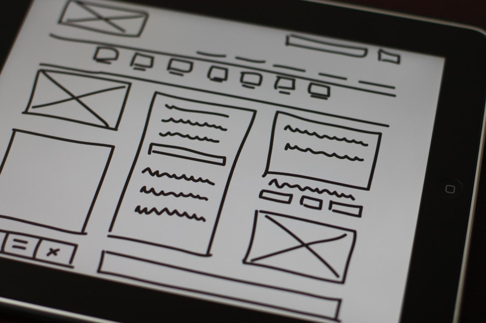

What is the purpose of a README file?
A README file is a crucial component of any open-source project, providing essential information to users, developers,
and maintainers. It serves as a gateway to your project, helping others understand its purpose, functionality, and
usage.
Learn more

What is the purpose of a wireframe?
Wireframes serve as essential tools in structural planning for digital interfaces, helping designers organize and
arrange components to create a logical framework. They illustrate user flow by mapping how users navigate through the
interface and access features, enhancing the planning of user interactions. Additionally, wireframes facilitate
communication among stakeholders, designers, and developers by providing a unified visual language for design ideas and
concepts.
Learn more
What is a branch in Git?
A Git branch represents an independent line of development from the main codebase. By default, Git projects start with a
main branch called "master". When you create a new branch, you are making a parallel version that you can work on without
impacting that main code.
It's like having alternate realities! The master branch represents the production version that your users see. And
feature branches represent experimental states that are not ready to go live.
Learn more